信息检索模型
信息检索模型的形式特征
任何检索策略都包含3个部分：文档表示、查询表示和匹配函数。
- 文档表示：反映文档在系统中的存储形式描述，可用一组关键词或标引词表示。
- 查询表示：反映对用户信息需求的描述。
- 匹配函数：用于将经过处理的文档表示和查询表示放入系统中进行匹配，以过滤输出结果。
信息检索模型主要从两个方面抽象地研究信息检索方法：
一是确定在检索模型中如何表示构成检索系统的两个要素，即文档和检索式；
二是确定在模型中如何定义和计算文档和检索式之间的关系。
信息检索模型是描述信息检索中的文档、查询和他们之间的关系（匹配函数）的数学模型。
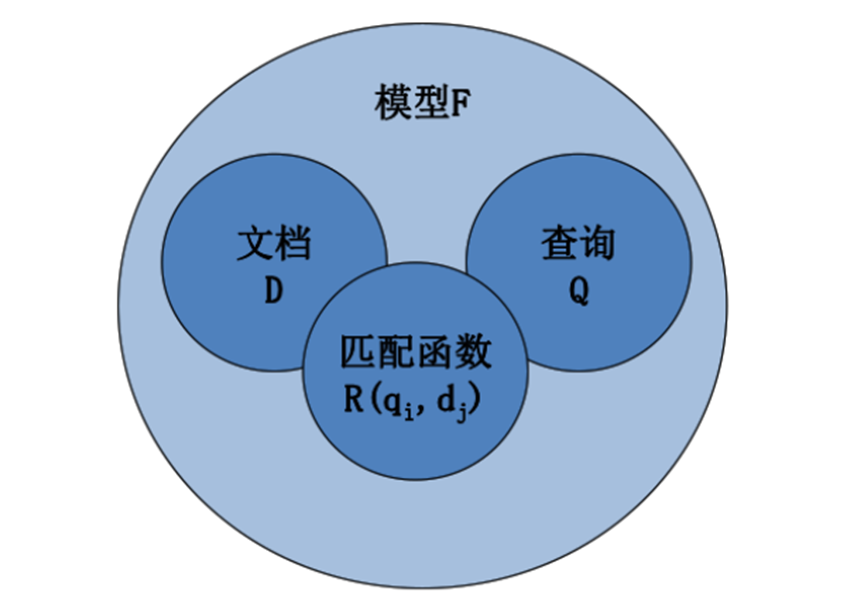
定义：信息检索模型是一个四元组 $/D，Q，F，R(q_i，d_j)/ $
（1）D是文档集中的一组文档逻辑视图（表示），称为文档的表示；
（2）Q是一组用户信息需求的逻辑视图（表示），这种视图（表示）称为查询；
（3）F是一种机制，用于构建文档表示、查询及它们之间关系的模型；
（4）R（qi，dj）是排序函数，该函数输出一个与查询 ( q_i \in Q ) 和文档表示 ( d_j \in D ) 有关的实数，这样就在文档之间根据 ( q_i ) 定义了一个顺序。
信息检索模型分类
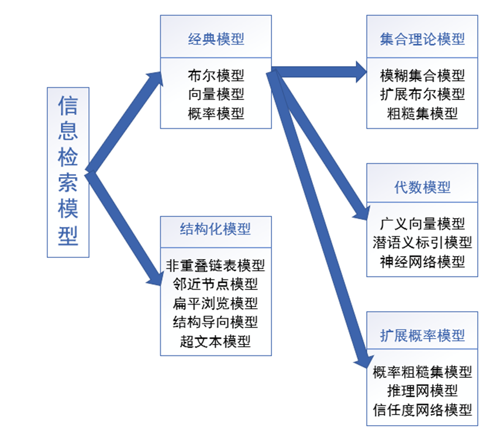
传统的信息检索模型包括布尔模型、向量模型、概率模型。
基于经典布尔模型，文档和查询用标引词集合来表示，称该模型为集合理论模型，包括模糊集合模型、扩展布尔模型、粗糙集模型；
基于经典向量模型，文档和查询用t维空间的向量来表示，称该模型为代数模型，包括广义向量模型、潜语义标引模型、神经网络模型；
基于经典概率模型，用于构建文献和查询模型的机制是基于概率理论的，称该模型为扩展概率模型，包括概率粗糙集模型、推理网模型、信任度网络模型。
除经典模型及其改进模型外，还有结构化模型，包括非重叠链表模型、邻近节点模型、扁平浏览模型、结构导向模型、超文本模型。
经典模型
定义
（1）用t表示系统中标引词的数目；
（2）用k表示标引词，K=k1,k2,...,kt是所有标引词的集合；
（3）用d表示文档，wi,j(wi,j≥0) 为二元组(ki，dj)的权值，用于衡量标引词的重要性，通常被认为是独立的：
- $w_{i,j}>0 表示文档d_j中的k_i$的权值
- wi,j=0 表示标引词ki未出现在文档中
（4）dj可以用标引词向量来表示，dj={w1,j，w2,j，...,wt,j}；
（5）函数gi用以返回任何t维向量中标引词ki的权，即gi(dj)=wi,j
布尔模型
×布尔模型是基于集合理论和布尔代数的一种简单的检索模型。
×标引词的权值全部被设为二值数据，wi,j∈{0, 1} ，即每一个标引词在一篇文档中仅有两种状态：出现或者不出现。
×查询q由连接词not、and、or连接起来的多个标引词所组成，通过对标引词与用户给出的检索式进行逻辑比较来检索文本。例如：
“奥运会”and（“中国”or（not “体操”））
该查询q表示：若一篇文档包含单词“奥运会”，同时包含“中国”或者不含“体操”两者中任意一个，即可认为该文档满足用户需求。
**布尔提问式：**q=k1 and (k2 or k3)
等价析取范式：
qdnf= (k1 and k2 and k3)or(k1 and k2 or not k3)
or(k1 and not k2 and k3)
**简化形式：**qdnf=(1,1,1)or(1,1,0)or(1,0,1)
(1,1,1)、(1,1,0)、(1,0,1)为qdnf的3个合取子项，用qcc 表示合取子项。
定义
对于布尔模型而言，标引词权值变量都是二值的，即 wi,j∈{0,1}，查询q是一个常规的布尔表达式。用qdnf表示q的析取范式，qcc表示qdnf的任意合取分量。文档dj和查询q的相似度可定义为
sim(dj,q)={10如果 ∃qcc∈qdnf 使得 ∀ki,gi(dj)=gi(qcc)其它
如果sim(dj,q)=1，则布尔模型表示dj与查询q相关（也可能不相关），否则文档与查询不相关。
示例
| 文档/标引词 |
图书馆 |
情报所 |
档案馆 |
… |
| 文档1 |
1 |
0 |
0 |
… |
| 文档2 |
1 |
1 |
1 |
… |
| 文档3 |
1 |
0 |
0 |
… |
| 文档4 |
0 |
1 |
0 |
… |
| … |
… |
… |
… |
… |
检索式：“图书馆”and“档案馆”
检索结果：文档2
检索式：“图书馆”or“档案馆”
检索结果：文档1、文档2、文档3
（1）查询莎士比亚的哪部剧本包含Brutus及Caesar，但是不包含Calpurnia？<br>布尔表达式 ：Brutus AND Caesar AND NOT Calpurnia。
（2）查询关于2011年快女 6进5 比赛的新闻，用布尔表达式怎么构造查询？<br>布尔表达式：2011 AND (快乐女声 OR 快女 OR 快乐女生) AND (6进5 OR 六进五 OR 六 AND 进 AND 五)
评价
优点：
- 查询简单，易于理解，易于实现
- 经过某种训练的用户可以容易地写出布尔表达式
- 可以通过扩展来包含排序的功能
缺点：
- 布尔逻辑式的构造不易全面反映用户的需求
- 不适合普通用户
- 检索结果不能按照用户定义的重要性排序输出
- 不支持部分匹配，构建不当，检索结果过多或者过少
向量模型
思考：使用二值权值是否存在局限呢？是否可以进行部分匹配？
向量模型，通过对检出文档按相似度降序排列的方式来实现文档与查询的部分分配。
向量模型又叫向量空间模型（Vector Space Model，简称VSM）。
原理
(1) 文档D和查询Q均被看成是标引词构成的向量；
(2) 计算文档向量与查询向量之间的相似度；
(3) 根据相似度，对检索结果进行排序；
(4) 根据检索结果，进一步做相关检索。
模型构建
(1) 文档向量的构造；
(2) 查询向量的构造；
(3) 查询与文档的匹配函数的选择；
(4) 相似度阈值的选择。
定义
对于向量模型，二元组 (ki,dj) 的权值 wi,j 是一个正的非二值数。对查询中的标引词进行加权，此时，用 wi,q 表示二元组 (ki,q) 的权值，wi,q≥0，t为标引词的数目，T表示特征项，文档 dj、查询向量q的向量表示如下：
dj=(w1,j,w2,j,…,wt,j)
q=(w1,q,w2,q,…,wt,q)
当使用向量来表示文档时，可以使用向量间的距离来衡量，一般使用内积或夹角𝜽余弦来计算，夹角越小说明相似度越高。
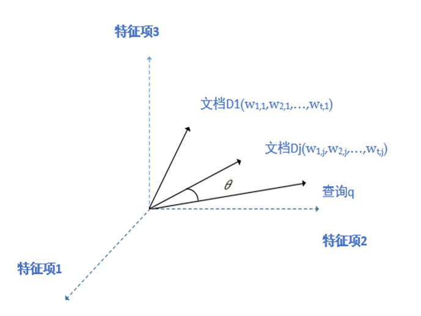
通过余弦相似度计算公式计算出每个文档向量与查询向量的相似度，排序这个结果后与设立的阈值进行比较：
(1) 如果大于阈值则页面与查询相关，保留该页面查询结果；
(2) 如果小于则不相关，过滤此页。
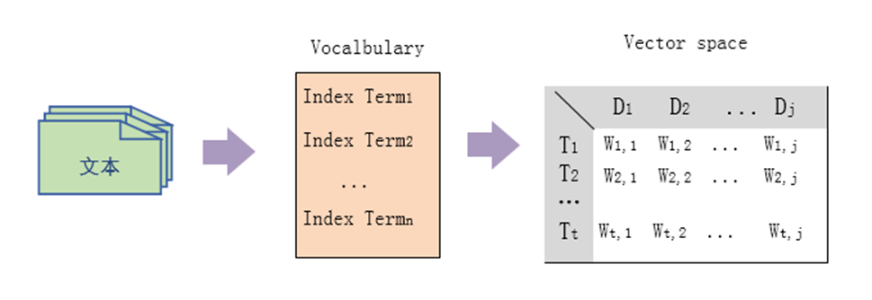
相似度计算
例1：T1、T2、T3 表示特征项，D1、D2 为文档向量，Q为查询向量，其中，D1=2T1+3T2+5T3，D2=3T1+7T2+T3，Q=0T1+0T2+2T3
解：(1) 计算内积
sim(D1,Q)=2×0+3×0+5×2=10sim(D2,Q)=3×0+7×0+1×2=2
(2) 计算余弦
sim(D1,Q)=cos(D1,Q)=02+02+22×22+32+522×0+3×0+5×2=0.81
sim(D2,Q)=cos(D2,Q)=02+02+22×32+72+123×0+7×0+1×2=0.13
例2：若有两个文档和查询分别为：
文档d1：ab c a f b a f h
文档d2：ac
查询q：aca
标引词集合 = {a b c d e f g h}
分别计算两个文档与查询的相似度。
特征项权重计算
- 特征项权重计算常用的方法有布尔函数、对数函数、TFIDF函数等，其中TFIDF函数应用最为广泛，其主要思想是词语加权技术，与聚类技术的基本原理密切相关。
- 本节介绍TFIDF函数计算特征项权重的方法，其主要思想是词语加权技术。
特征项权重计算
- TF：内部聚类相似度可以通过文档 dj 和语词 ki 的初始频率来度量，该词的频率称为TF（Term Frequency）因子。它可用于衡量标引词描述文档内容的好坏程度。
- IDF：交叉聚类的相异度可以通过文档集中语词 ki 的逆频率来衡量，该因子通常称为逆文档频率或逆文献频率（Inverse Document Frequency，IDF）因子。该因子阐明了在许多文档中出现的语词对于区分相关文档和不相关文档是没有作用的。
- 对于一个好的聚类算法而言，信息检索最有效的语词加权方案总是试图平衡TF和IDF。
设N表示系统中的文档总数，ni 表示包含标引词 ki 的文档数目，freqi,j 表示语词 ki 在文档 dj 中的初始频率（语词 ki 在文档 dj 文本中被提及的次数）。则文档 dj 中语词 ki 的标准化频率 fi,j 为：
fi,j=maxlfreql,jfreqi,j
最大值 maxlfreql,j 是指文档 dj 文本中所有语词的最大频率值。
如果语词 ki 不出现在文档 dj 中，则 fi,j=0，语词 ki 的逆文档频率 idfi 为：
idfi=logniN
IDF代表的是文档集合范围的一种全局因子。给定一个集合，那么每个单词的IDF值就唯一确定，跟具体的文档无关。
IDF的计算公式是基于经验和直觉的，有研究者分析认为：IDF代表了单词带有的信息量的多少，其值越高，则其信息含量越多，越有价值。
特征项权重计算
最著名的语词加权方案为：
wi,j=fi,j×logniN
对于查询语词的权值，Salton和Buckley指出可以采用如下方法，即
wi,q=(0.5+maxlfreql,q0.5×freqi,q)×logniN
评价
优点：
- 标引词加权改进了检索效果
- 其部分匹配策略允许检出与查询条件相接近的文档
- 可根据文档与查询之间的相似度对文档进行排序
缺点：
- 特征项在文档中的不同位置代表不同权重，而不同的关键词长度也会影响权重的大小
- 标引词被认为彼此之间相互独立，而在实践中，标引词之间可能存在相关性，不加分析地应用到模型中，会影响整体的效果
概率模型
经典概率模型是由Roberson和Sparck Jones提出的，它对文档与检索相匹配的概率进行估计，估计值作为衡量文档相关性的尺度。
概率模型是由概率排序原理推导出来的。概率排序原理：给定一个用户查询，如果搜索系统能够在搜索结果排序时按照文档和用户需求的相关性由高到低排序，那么这个搜索系统的准确性是最优的。
原理
根据用户的检索q，将文档集D中的所有文档分为两类：一类与检索需求q相关（集合R），另一类与检索需求不相关（集合Rˉ）。
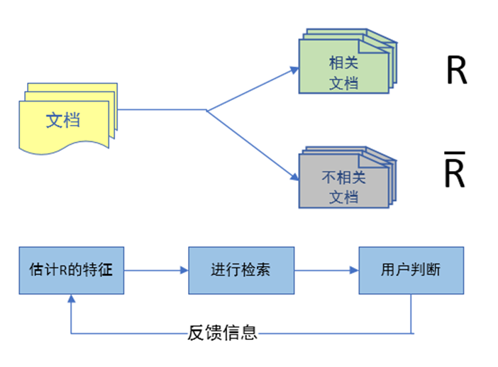
P(R∣d)代表给定一个文档D对应的相关性概率，P(Rˉ∣d)代表该文档的不相关概率，如果 P(R∣d)>P(Rˉ∣d)，则可以认为文档与用户查询是相关的。根据贝叶斯公式：
P(R∣d)=P(d∣R)P(R)/P(d)
P(Rˉ∣d)=P(d∣Rˉ)P(Rˉ)/P(d)
代入P(R∣d)>P(Rˉ∣d)，得
P(R∣d)>P(R∣d)⇔P(d)P(d∣R)P(R)>P(d)P(d∣R)P(R)⇔P(d∣R)P(d∣R)>P(R)P(R)
对于搜索系统来说，只需要将文档按照 P(d∣Rˉ)P(d∣R) 大小降序排序即可，则问题转换为计算P(d∣R)、P(d∣Rˉ)
二元独立模型基本假设
假设一：（二元属性取值）
任意一个文档d可以表示为d (x1,x2,…,xi,…)，其中二元随机变量 xi 表示标引词 ti 是否在该文档中出现，若出现，则xi=1，否则xi=0。
若某特征集包含5个单词，文档D表示为D{1,0,1,0,1}，其含义？
答：表示该文档中出现了第1、3、5个单词，未出现第2、4个单词。
假设二：（标引词独立性假设）
在一个文档中，任意一个标引词的出现与否不会影响到其它标引词的出现，它们之间相互独立。
基于以上两个假设，二元独立模型可以对两个因子P(d∣R)、P(d∣Rˉ)进行估算。
例：若某特征集包含5个单词，文档D表示为D{1,0,1,0,1}
用 pi 表示第i个单词在相关文档集合内出现的概率，那么有：
P(d∣R)=p1×(1−p2)×p3×(1−p4)×p5
用 $ q_i $ 表示第i个单词在不相关文档集合内出现的概率，那么有：
P(d∣Rˉ)=q1×(1−q2)×q3×(1−q4)×q5
于是，可以估算：
P(d∣Rˉ)P(d∣R)=q1×(1−q2)×q3×(1−q4)×q5p1×(1−p2)×p3×(1−p4)×p5
二元独立模型（Binary Independent Model）
基本步骤：
(1) 贝叶斯公式
P(R∣d)=P(d∣R)P(R)/P(d)P(Rˉ∣d)=P(d∣Rˉ)P(Rˉ)/P(d)
(2) 根据假设一、假设二有
P(d∣R)=P(x1,x2,…∣R)=i=1∏mP(xi∣R)P(d∣Rˉ)=P(x1,x2,…∣Rˉ)=i=1∏mP(xi∣Rˉ)
(3) 定义文档d与检索q的相关度排序函数 fr(q,d) 为
fr(q,d)=P(Rˉ∣d)P(R∣d)
fr(q,d) 的值越大，则表示文档d与检索q越相关。
由(1)、(2)、(3)综合得
fr(q,d)=∏i=1mqixi(1−qi)1−xi∏i=1mpixi(1−pi)1−xi
其中 pi=P(xi=1∣R),qi=P(xi=1∣Rˉ)
右边取对数整理，得到相关度排序函数的计算公式
fr(q,d)=i=1∑n[xilogqi(1−qi)pi(1−pi)]
那么，如何计算 pi,qi 呢？
若得到一定数量的带有标记（相关性标记）的文档，如下表：
|
相关 |
不相关 |
| xi=1 |
nR(xi=1) |
nRˉ(xi=1) |
| xi=0 |
nR(xi=0) |
nRˉ(xi=0) |
则可以通过最大似然估计法来确定 pi,qi 的值
pi=P(xi=1∣R)=nR(xi=1)+nR(xi=0)nR(xi=1)qi=P(xi=1∣R)=nRˉ(xi=1)+nRˉ(xi=0)nRˉ(xi=1)
但在实际应用中，一般无法预先给出带有相关性标记的文档集，所以常常通过相关反馈（Relevant Feedback）技术来获取标记文档：先采用其它检索技术，如全文检索技术等获得一批文档，并由用户对这些文档进行相关性标记，然后再将这些标记后的文档作为确定参数的文档集。
二元一阶相关概率模型
- 标引词独立性假设只是为了数学上处理方便，并不符合实际情况。
- 与二元独立模型相比，二元一阶模型在假设一上与前者完全一致（也就是对文档的表示两者一致）。唯一的区别在于后者不承认假设二（标引词独立性假设），从而对P(d|R)和P(d|R)的计算与前者不同。
双Poisson分布概率模型
-
双Poisson分布模型最先是由Harter在研究文档标引时提出的。
-
实验：文档中的单词可分为两类，一类单词与表达文档的主题相关，称为内容词，另一类只完成一些语法功能，称为功能词。统计实验发现，功能词在文档中的分布与内容词不同，前者出现的概率比较稳定，其波动情况可以近似为泊松分布，如果用x表示某个功能词在文档中的出现频率，u为该分布均值，表示该功能词的平均出现概率，则有：
P(x)=x!uxe−u
-
内容词在文档中的出现频率，在一定意义上反映了一个文档的主题。
-
Harter假设：根据一个内容词可以将文档从主题上分为两类，同时该内容词在两类文档中的出现频率也会很不相同：一类文档的主题与该内容词相关，那么该内容词在其中的出现频率应该比较高，其波动特征可以用一个泊松分布表示；而另一类文档的主题与内容词不相关，所以内容词在其中的出现频率应该比较低，其波动特征也可以用一个泊松分布表示。
-
综合起来，一个内容词在文档中的出现频率x可以表示为两个泊松（Poisson）分布的加权组合：
P(x)=πx!uxe−u+(1−π)x!vxe−v
其中，u、v分别为内容词在两类文档中出现频率的均值，π表示任意一个文档属于第一类的概率，该假设被称为双Poisson分布假设。只要将所有的标引词看作是内容词，则它们也满足2-Poisson模型，则就形成了双Poisson模型。
-
与二元独立模型相比，2-Poisson模型的不同在于不承认假设一，其余都相同。
评价
优点：
- 利用概率论原理，通过赋予索引词某种概率值来表示这些词在相关文档集合和非相关文档集合中出现的概率，然后计算某一给定文档与某一给定用户提问相关的概率并做出决策
- 具有内在的相关反馈机制，将文档根据它们的相关概率按递减顺序排列
缺点：
- 最初需要把文档分成相关的集合和不相关的集合
- 这种方法并不考虑标引词在文档中出现的频率，即所有的权值都是二值的
- 假设标引词相互独立，然而如同VSM一样，这并不能明确标引词的独立性在实际情况中是否为一个不利的假设。
集合理论模型
本节介绍集合理论模型的三个改进模式：模糊集合模型、扩展布尔模型、粗糙集模型。
模糊集合模型
用关键词集来表示文献和查询，会形成仅与文献各自真实的语义内容部分相关的描述，其结果使文献与查询的匹配是近似的或含糊的。通过以下描述构建模型：将每一个查询语词定义成一个模糊集合，每篇文档在这个集合中都有一个隶属度，取值通常小于1。
模糊集合模型建立在模糊集合理论的基础上，模糊集合理论是经典集合论的推广。
模糊集合理论
模糊集合理论（fuzzy set theory）：主要研究边界不明确的集合的表示。
其中心思想是：把隶属函数（membership function）和集合中的元素结合在一起。该函数的取值在区间[0,1]上，0对应于不隶属于该集合，1表示完全隶属于该集合，隶属值在0和1之间表示集合中的边际元素。
定义：
论域U的一个模糊子集A可以用隶属函数 uA 来描述 uA：U→[0,1]，为U的每个元素u分配一个数值uA(u)，该数值在区间[0,1]上。
- uA(u)可称为u的隶属度，隶属度uA(u)越接近1，则表示u属于A的程度越高
- 隶属度uA(u)越接近0，则表示u属于A的程度越低
示例：
假设U={0,1,2,…,9}代表一个家庭中所可能拥有子女个数的集合，令三个模糊集合定义为：
| 子女数 |
子女众多(A) |
子女适中(B) |
子女很少© |
| 0 |
0 |
0 |
1 |
| 1 |
0 |
0 |
1 |
| 2 |
0 |
0.2 |
0.8 |
| 3 |
0 |
0.7 |
0.2 |
| 4 |
0 |
1 |
0.1 |
| 5 |
0.1 |
0.7 |
0 |
| 6 |
0.3 |
0.2 |
0 |
| 7 |
0.8 |
0 |
0 |
| 8 |
1 |
0 |
0 |
| 9 |
1 |
0 |
0 |
模糊集合中最常用的三种运算：
- 模糊集合的补运算
- 两个或多个集合的并集合
- 两个或多个模糊集合的交运算
模糊集合模型的原理
- 将每一个标引词定义成一个模糊集合，每篇文档在这个集合中都有一个隶属度，即用隶属函数表示每一篇文档与标引词相关的程度，其取值通常小于1
- 检索时通过匹配运算，计算每篇文档在查询中的标引词所定义的模糊集合中的隶属度，并根据隶属度大小对文档排序
模糊集合模型构建
1. 标引词关联矩阵
采用叙词表来建立模型是信息检索过程构建模型的一种常用方法，叙词表可以通过定义一个词-词关联矩阵（term-term correlation matrix）C来构建，这个矩阵的行和列分别对应于文档集合中的标引词。在矩阵C中，语词ki和kl之间的标准化关联因子ci,l可以定义为：
ci,l=ni+nl−ni,lni,l
其中：
- ni表示包含语词ki的文档的数目
- nl表示包含语词kl的文档的数目
- ni,l表示同时包含语词ki、kl的文档的数目
2. 文档的隶属度
可以使用词-词关联矩阵C来定义与每个标引词ki相关联的模糊集合，在这个集合中，文档dj的隶属度可以计算如下：
μi,j=1−kl∈dj∏(1−ci,l)
即计算文献中所有语词的代数和（负代数积求补实现）。
如果文档dj自身的语词与ki有关，则该文档属于语词ki的模糊集合；
只要文档dj中至少有一个标引词ki密切相关，则𝜇i,j接近1，且标引词ki是文档dj的一个很好的模糊索引；
如果文档dj中的所有标引词与ki不是密切相关的，则标引词ki不是文档dj的一个好的索引（如𝜇i,j接近0）。
如此，可以使文档d中所有语词的代数和转换成𝜇i,j因子的值。
3. 用户查询表示
用户通过一个布尔型的查询表达式来阐述他的信息需求，模糊集合模型将查询转换为析取范式。
**示例：**查询q=ka∧(kb∨¬kc)可以写成析取范式的形式：
qdnf=(1,1,1)∨(1,1,0)∨(1,0,0)
其中的每一个分量都是三元组(ka,kb,kc)的一个二值加权向量，这些二值加权向量是qdnf的合取分量。这里，用cci表示第i个合取分量的参量，则：
qdnf=cc1∨cc2∨…∨ccp
其中p是qdnf的合取分量的数目。
计算文档与查询相关的过程类似于采用经典布尔模型进行比较的过程。其区别在于：此处的集合是松散的集合而不是布尔集合。
对于 [q=ka∧(kb∨−kc)]，用$ D_a 表示与索引k_a相关联的文档模糊集合；此外，用\bar{D_a}表示 D_a 的补集，模糊集合\bar{D_a}与\bar{k_a}相关联，它是标引词k_a的否定。类似的，则可以定义标引词k_b的模糊集合D_b和标引词k_c的模糊集合D_c$。
( D_a ) 是由隶属度 ( \mu_{a,j} ) 大于给定阈值 ( K ) 的文档 (d_j) 组成的集合。( \mu_{i,j} )（其中 ( i \in {a, b, c} )）表示文档 (d_j) 在关键词 (k_i) 对应的模糊集合中的隶属度，反映文档与关键词的关联强度。
用户查询被表示为析取范式 (q_{dnf})，包含三个合取分量（如 ( cc_1, cc_2, cc_3 )）。( D_q ) 是与这些合取分量关联的模糊集合的并集，即覆盖所有可能的查询条件组合
文档 (d_j) 在模糊结果集合 ( D_q ) 中的隶属度 ( \mu_{q,j} ) 计算如下：
μq,j=1−i=1∏3(1−μcci,j)
μq,j=1−(1−μa,jμb,jμc,j)(1−μa,jμb,j(1−μc,j))(1−μa,j(1−μb,j)(1−μc,j))
模糊信息检索
- 析取模糊集合中的隶属度是用代数和来计算的，而不是最常用的最大值函数
- 合取模糊集合中的隶属度是用代数积来计算的，而不是常见的最小值函数
- 采用代数和与代数积得出的隶属度，比用最大值函数和最小值函数计算得出的隶属度数值的变化更小，从而更适合于信息检索系统
评价
优势：
- 模糊集合模型与经典布尔模型关系密切，它基本保留了布尔检索功能，但是更为灵活，避免了布尔检索的二值相关性测度局限性
- 模糊集合模型支持对命中文档按相关性大小排序
劣势：
- 模糊集合模型仅局限于小规模的文档集合，相关实试验结果的可比性差
- 它的研究工作主要集中于模糊学领域的文档中，在信息检索领域的研究并不广泛
扩展布尔模型
扩展布尔检索模型，将向量检索模型与布尔检索模型融为一体，克服了经典布尔模型的一些缺点。主要原因是向量空间模型简单、快捷，并能产生较好的检索效果。用 部分匹配和 语词加权功能来扩展布尔模型，可以使布尔查询表达式与向量模型的特征结合在一起。
扩展布尔模型基于对布尔逻辑基本假设的批评性分析做出了改进。
设文本集中每篇文本仅由两个标引词t1和t2标引，并且t1、t2允许赋以权值,，其权值范围为[0, 1]，权值越接近1，说明该词越能反映文本的内容，反之，越不能反映文本的内容，在扩展布尔，上述情形用平面坐标系上某点代表某一文本和用户给出的检索式。
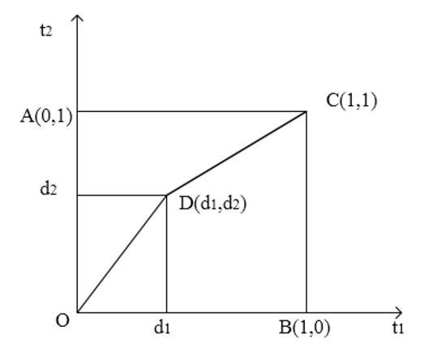
横、纵坐标用t1、t2表示，其中：
- A (0, 1)表示词t1权值为0、词t2 权值为1 的文本；
- B(1, 0)表示词t1权值为1、词t2权值为0 的文本；
- C(1, 1)表示词t1、t2的权值均为1 的文本；
文本集D中凡是可以用t1、t2标引的文本可以用四边形OACB中某一点表示，同样，用户给出检索式后, 也可用四边形OACB 中某一点表示。
对于由t1和t2构成的检索式 q=t1∨t2，图中只有A、B、C三点所代表的各文本才是最理想的文本，对于某一文本D来说，当D点离A、B、C三点越接近时说明相似度越大，或者说，当D点离O点越远时，相似度越大。因而D与O的距离：
∣DO∣=d12+d22
显然
0≤∣DO∣≤2
为了把相似度控制在0和1之间，将相似度定义为：
Sim(D,Q(t1∨t2))=2d12+d22
对于由t1和t2构成的查询q=t1∧t2，只有C 点才是最理想的文本，用D与C的距离作为衡量一文本与查询q的相关程度的一个尺度，把相似度定义为:
Sim(D,Q(t1∧t2))=1−2(1−d1)2+(1−d2)2
上述两式还可推广到对检索标引词进行加权的情形，设检索标引词t1、t2的权值分别为a, b, 0 ≤ a, b ≤ 1，则可进一步推广为：
Sim(D,Q(t1,a)∨(t2,b))Sim(D,Q(t1,a)∧(t2,b))=a2+b2a2d12+b2d22=1−a2+b2a2(1−d1)2+b2(1−d2)2
n维推广公式
设D=(d1,d2,…,dn)，其中di表示第i个标引词ti的权值，0≤di≤1。
析取范式：
Sim(D,Q∨(p))=[a1p+a2p+…+anpa1pd1p+a2pd2p+…+anpdnp]p1
合取范式：
Sim(D,Q∧(p))=1−[a1p+a2p+…+anpa1p(1−d1)p+a2p(1−d2)p+…+anp(1−dn)p]p1
扩展布尔模型是经典布尔检索模型精确匹配的严格性和向量处理模式提问的无结构性的折中，它用代数距离的方式来解释并放松了布尔操作的要求，因而有效融合了传统的布尔模型、向量空间模型的处理思想。
主要特点
- 与传统布尔检索中的倒排档技术相兼容，支持使用标准布尔检索逻辑表达的提问式结构
- 允许在文档和提问式中进行词加权处理
- 支持按相似度的大小排序输出检索结果
- 通过调整参数p的取值，可以灵活选择并得到不同的检索结果
粗糙集模型
粗糙集理论是波兰科学家Pawlak于1982年提出的一种处理不精确、不相容和不完全数据的新的数学工具，它的独到之处在于不需要先验知识，就可以从数据中获取潜在依赖规律。
在粗糙集理论中，一个等价关系将一个非空集合划分成互不相连的等价类，根据这个关系等价类中的对象是不可区分的。全集和等价关系一同定义了一个近似空间，等价类和空集被称为这个近似空间的基本集或原子集。这样一个近似空间可以用来描述全集的任意子集，这要用到两个近似集：上近似集和下近似集。
上近似集和下近似集
设R是划分非空全集U的一个等价关系，近似空间为aprR=(U,R)，一个划分被定义为U/R = {C1,C2,…,Cn}，这里Ci是U/R的一个等价类，对于U的任意一个子集S：
- 下近似集： aprR(S)={x∈Ci∣Ci⊆S}
- 上近似集： aprR(S)={x∈Ci∣Ci∩S=∅}
上近似集和下近似集近似描述了近似空间(U, R)中的子集S，粗糙集就可以用这两个近似集来描述。
利用粗糙集在信息检索中可以将词汇建立模型：
- 该模型是将给定范围的单词（单个词汇和段落）当作全集U，表示等价关系R定义为字眼的相似关系，R对U产生一个划分，这样一个类中的字眼彼此都是同义的，用向量来表示文本和查询，通过近似空间aprR= (U, R)中的上、下近似集进行比较。
- 文本和查询是全集的子集，分别求出它们在近似空间aprR= (U, R)中的上、下近似集。下近似集中的属性确定地描述了子集，而上近似集中的属性可能地描述了子集，这些确定性和可能性当然很大程度上是由近似空间决定的，因此，下近似集自动向核心描述靠近，而上近似集在词汇空间允许的范围内扩大了描述。
相似度计算
当对文本和查询进行比较时，采用非自反的相似度方法，设U的两个子集S1和S2，S2作为中心，| - |表示边界差：
BL=aprR(S2)∣−∣(aprR(S1)∩aprR(S2))BU=aprR(S2)∣−∣(aprR(S1)∩aprR(S2))
计算：
SimR(S1,S2)=1−[card(BL)/card(aprR(S2))]
在比较中，保持S2为中心，如果上式为0，表示不匹配；上式为1，表示S2和S1之间的最大匹配。
SimR(S1,S2)=1−[card(BU)/card(aprR(S2))]
评价
优点：
- 无须提供问题所需处理数据集合之外的任何先验信息，粗糙集理论对不确定性的描述相对客观
- 只处理离散性属性，连续属性的离散化使得粗糙集理论对离散和连续属性都能够处理，扩大了该理论的应用范围
缺点：
- 存在局限性，不能使用用权值描述的文本和查询，也不能利用除了同义词之外的字眼关系
代数模型
本节将介绍三种典型的代数模型：广义向量空间模型、潜语义标引模型、神经网络模型。
广义向量空间模型
三种经典模型都假定标引词之间是相互独立的，对于向量模型（VSM）而言，这种假设通常解释为：
定义：
用 ki 表示标引词 ki 的一个向量，向量模型中标引词的相互独立意味着向量集合 {k1,k1,…,kt} 是线性独立的，并构成了目标子空间的基。该空间的维数就是集合中标引词的数目t。
*通常，VSM中标引词之间相互独立性在某种更严格的意义上可以理解为标引词向量两两正交，即 ki⋅kj=0。
在实际中，标引词是否存在相互关系呢？
*标引词之间总存在着一定的相互关系，即不是两两正交的，一个词的出现可能会引起另外一个相关词的出现。
*因而，标引词向量不能作为向量空间的正交基（在向量中常把 {k1,k1,…,kt} 作为目标子空间的基），这就导出了广义向量空间模型。
*在广义向量空间模型中，标引词向量是线性独立但不是两两正交的，标引词向量由一组更小分量所组成的正交基向量来表示，词与词之间的关系可直接由基向量表示给出较为精确的计算。
*系统中的标引词集合为 {k1,k1,…,kt}，其生成的布尔代数表示为<B, ¬, ∧, ∨>。则文档中词出现的所有模式可以用最小项来表示。
定义：
布尔代数<B, ¬,∧,∨> 上由 x1,x2,…,xn 产生的形如 x1σ1∧x2σ2∧x3σ3 的布尔表达式称为由 x1,x2,…,xn 产生的最小项，其中，当 σi=1 时 xiσi=xi；当 σi=0 时 xiσi=xˉi。
*t个标引词生成 2t个互不相同的最小项，在每个最小项中，ki 和 ki 之一出现且只出现一次。最小项不能被进一步简化，他们构成布尔代数的基本元素；其它的任何元素都可以由基本元素的析取范式表示。
*令 {mx}2t 表示 B的元素，则每一个基本元素都可以由布尔向量 (σ1,σ2,…,σt) 唯一确定，即
mx=k1σ1∧k2σ2∧⋯∧knσnkiσi={ki¬ki当σi=1时当σi=0时
*标引词也是表示 B中的一个元素，则可以表示成基本元素的析取式，即 ki=m1∨m2∨…∨mr。
ki=∑∀r,gi(mr)=1ci,r2∑∀r,gi(mr)=1ci,rmrci,r=dj∣gi(dj)=gi(mr) for alli∑wi,j
式中的关联因子用于计算文档 dj 中标引词的权值之和，函数 gi(mr) 返回最小项 mr 中标引词的权值（通常为 1）。
构建过程：
①把文档和提问分别表示为：
djq=∀i∑wi,jki=∀i∑wi,jki
代入前面标引词 ki 的值，转化成最小项向量的集合；
②利用标准余弦函数来计算文档向量 dj 和提问向量q之间的相似度；
③将文档按相似度的大小以递减顺序排列输出。
*这种方法既考虑了语词之间的关系，又没有陷入对相似函数的复杂讨论中。
评价
*由广义向量空间模型导出的排序把标准的语词-文献权值 wi,j 和关联因子 ci,r 结合在一起。
*由于词一词关联的使用并不必然产生已改进的检索效果，所以广义向量空间模型在哪些方面优于经典向量空间模型是不明确的。
*在大型集合中用广义模型计算排序，其代价是非常高的。
*从理论上看，广义空间模型在提出了相当重要的见解。
潜语义标引模型
*在传统的向量空间模型中，文档集合中的文档被抽取成若干个标引词，每个文档由标引词构成一个文档向量空间，而每个特征项在文档集合中的各个文档中的权值集合则构成了一个特征项向量空间。两者结合在一起构成了文档集合的向量空间。
*在检索过程中，用标引词集合来概括文档和查询的内容可能降低检索结果，其最终结果有两种情况：
- 许多不相关的文档可能包含在结果集合中；
- 没有用任何查询关键词进行标引的相关文档也有可能不被检出。
基本思想：
- 将标引词之间、文档之间的依赖关系以及标引词与文档之间的语义关联都考虑在内，将文档向量和提问向量映射到与语义概念相关联的较低维空间中，从而把文档的标引词空间向量转化为语义概念空间。
- 在降维的语义概念空间中，计算文档向量和提问向量的相似度，然后根据所得的相似度把排列结果返回给用户。
关键词-文档矩阵创建
设M表示t行n列的关键词-文档矩阵，t表示系统中标引词的数目，n为总的文档数目，则
M=(d1,d2,⋯,dn)=W11W21⋮Wt1W12W22⋮Wt2⋯⋯⋯W1nW2n⋮Wtn=M11M21⋮Mt1M12M22⋮Mt2⋯⋯⋯M1nM2n⋮Mtn
矩阵中的每一个元素 Mi,j 为关键词文档 (ki,dj) 的权值，该权值可以用传统向可以用传统向量空间模型中普遍采用量空间模型中普遍采的TFIER权方案来确东东确
奇异值分解（Singular Value Decomposion, SVD）
*奇异值分解是一种与特征值分解、因子分析紧密相关的矩阵方法。
定义：
M为 t×n 矩阵，MTM 的特征值为 λ12,λ22,…,λn2，则 σ1=∣λ1∣,σ2=∣λ2∣,…,σn=∣λn∣，为矩阵M的奇异值。
定理：
任何矩阵均可以被分解成三个矩阵的乘积。
*关键词-文档矩阵也可以分解成三个部分，M的奇异值分解如下：
M=KSDt
Kˉ 的是由词-词关联矩阵 Mˉ⋅Mtˉ 导出的 t×t 正交特征向量矩阵 (kkt=ktk=E)，称为 M的左奇异向量；
Dt 是由文档-文档关联矩阵 M⋅Mt 导出的 n×n 正交特征向量矩阵 (DDt=DtD=E)，称为 M的右奇异向量；
Sˉ 是n×n 奇异值对角矩阵，对角元为 σ1，σ2，…，σ1≥σ2≥…≥σr，此对角为 M的奇异值；Sˉ 是n×n 奇异值对角矩阵，对角元为 σ1,σ2,…,σr，且
④r=min(t,n)是矩阵M的秩。
*奇异值分解允许用一个维度较小的矩阵做初始矩阵的最优近似，选定一个合适的 x值，保留 S中的前 x个最大奇异值，并保留 K，D中对应的行和列，删去其余的行和列。则矩阵M的秩x近似矩阵 Mx 为：
Mx=KxSxDxt
Kx 是由 K的前 x列组成的 t × t矩阵；
Sx 是由S的前x行、前x行列组成的 x×x 矩阵；
Dxt 是由 Dt 前 x行组成的 x×n 矩阵。
*通过M的秩–r近似矩阵将文档的关键词向量空间转化为语义概念空间，且语义概念空间的维度x≤t（t是文档关键词向量空间的纬度，也即系统中所使用的标引词的数量），因而，次要的术语区别就被忽略了，有相似用法的关键词，其向量也就相似，用法不同的关键词，对应的向量也就不相似，从而降低了同义词、多义词的影响，减少了冗余。
*值x的选择是折中的。首先，x必须足够大，能包括所有的实数结构；其次，x又必须足够小，以便能忽略掉一些错误和不重要的描述细节。如果k值太小，那么分辨文档或标引词的能力不足；如果k值过高，则接近于传统的向量空间模型，失去了它可以表示词相互关系的能力。
*在维度为 x的降维空间中，两篇文档的相似度等于 Mx 的两个相应列向量的点积：
MxtMx=(KxSxDxt)tKxSxDxt=DxSxtKxtKxt=DxSxt(DxSx)(DxSx)t)t
(1)矩阵 MxtMx 中的元素(i, j)是矩阵 DxSx 的第 i、j行的点积，它量化了文档 di 和 dj 之间的关系。
(2)标引词 ki 与文档 dj 的相似度是 Mx 的第(i, j)元素。
Mx=KxSxDxt=KxSx21(DxSx21)t
*由上式，Mx 的(i, j)元素可以由 Kx Sx2 的第 i行与 Dx Sx2 的第 j 1行的点积得出。
*为了对与用户提问相关的文档进行排序，我们通常把用户提问向量 Q作为初识词-文档矩阵的一个伪文档向量（例如，假定查询被构建成数值为 0的文档，那么矩阵 MxtMx 的第一行即为关于提问的所有文档的排序）。
*转化为 x维语义概念空间的向量 Q 后，才能在语义概念空间中进行文档相似性的比较；用户提问的转化公式为：
Qˉ=QtKxSx−1
*计算文档向量与提问向量的相似度，并根据相似度的计算结果，把文档排列起来返回给用户。
*潜语义标引模型将文档和提问向量从t维关键词向量空间转化为x维语义概念空间，降低了空间的维度，消除了基于标引词表示的描述的噪音，克服了多义词和同义词对检索的影响，提高了检索的精度。
神经网络模型
什么是神经网络？
*神经网络是大脑中相互连接的神经元网络结构的一种过于简单化的图形表示，图中的结点表示处理单元，边表示突触链接，可以为神经网络的每一条边分配一定的权值。
*与基于规则的符号系统相比，神经网络模型能更好地仿效人类的认知过程，学习用户的兴趣、爱好和行为，与用户进行相互作用。
用于信息检索的神经网络可以用下图来描述，在图中可以看出神经网络由三层所组成：第一层表示查询语词，第二层表示文档语词，第三层表示文档本身。
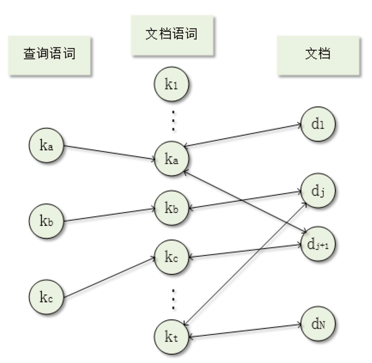
信息检索处理过程
- 由第一层的查询语词结点分别向对应的第二层文档语词结点发出信号；
- 文档语词结点又产生信息并向第三层的相关文档结点传送；
- 文档节点在收到文档词语节点发送的信号后，产生新的信号并返回到文档词语结点；
- 过程3将重复进行，直到信号不断衰减而终止。
信号强度的确定
*为查询语词结点分配初始/固定的最大活跃值(activation)，然后查询语词结点向文档语词结点发出信号，而文档语词结点已用规范化的查询语词权值 wˉi,q 来衰减，采用查询向量的范数来规范化。
wi,q=∑i=1twi,q2wi,q
*一旦信号到达文档语词结点，这些结点就直接向文档结点发出新的信号，这些信号已用规范化的文档语词结点的权值 wˉi,j 来衰减，采用文档向量的范数来规范化。
wˉi,j=∑i=1twi,j2wi,j
*对到达文档结点的信号进行求和，在信号传播的第一个阶段之后，与文档 dj 相关联的文档结点的活跃值表示为
i=1∑twˉi,qwˉi,j=∑i=1twi,q2∑i=1twi,j2∑i=1twi,qwi,j
神经网络如何设计呢？
(1)采用什么类型的网络模型
(2)网络结构和参数的确定
神经网络模型
*近几年，有许多优秀的神经网络模型出现，有研究者已经运用了一些网络在信息检索上，比较著名的有Hopfield网络和BP网络。
- Hopfield联想记忆神经网络能模拟人类的联想记忆，具有相似输入获得相似输出的功能，是容错型的存储和检索工具。
- BP网络由德国的T.Mandl应用于信息检索，提出了COSMIR模型，其检索过程以人类知识为中心，是一种能通行相似性学习的新型信息检索模型。
网络结构和参数的确定
*基于进化算法的神经网络进化学习为解决此问题提供了更有潜力的途径。
*进化算法(EA)是从自然进化的思想和理论发展而来的一类基于群体的随机搜索算法，包括遗传算法(GA)、进化策略(ES)、进化规划(EP)、遗传规划(GP)。
*遗传算法是进化计算中提出得最早、应用最广、研究得最深入的一种算法，它是最早用于神经网络自动设计的进化算法并且获得的实验结果也最多。
*遗传算法主要是借助生物进化机制和遗传学原理，按照自然选择和适者生存的原则，利用简单的编码技术和繁殖机制，模拟自然界生物群体优胜劣汰的进化过程，实现对复杂问题的求解。
*遗传算法的运算过程是一个反复迭代过程。它操作的对象是一组编码化的可行解，即由M个个体组成的集合（又称为群体），通过三种遗传算子–选择算子、交叉算子和变异算子不断地对其进行遗传和进化操作，并且每次都是按照优胜劣汰的规则，将适应度较高的个体以较大的概率更多地遗传到下一代，这样最终在群体中会得到一个优良的个体，使得它能达到或接近于问题的最优解。
遗传算法的基本步骤：
①初始化：设置最大进化代数T；随机生成M个个体作为初识群体P(0)。
②个体评价：计算群体P(t)中各个个体的适应度。
③选择运算：将选择算子作用于群体。
④交叉运算：将交叉算子作用于运算。
⑤变异运算：将变异算子作用于群体。群体P(t)经过选择、交叉、变异运算之后得到下一代群体P(t+1)。
⑥终止条件判断：若t≤T，则：t→t+1，转到(2)，若t>T，则以进化过程所得到的具有最大适应度的个体作为最优解输出，终止计算。
遗传算法在用户兴趣模型提取与信息检索方面的优势
遗传算法是一种基于自然选择的自适应算法，它的这种特性使得它非常适合于动态环境中的应用，而通常用户的兴趣也是随着时间的变化而变化的；
从某种意义上来说提取用户兴趣模型也是一个优化问题；
遗传算法中存在演化的随机性，使得发现用户没能正确表达出来的兴趣需求成为可能。
用户兴趣模型
用户兴趣模型可描述为：以一组含有权重的关键字来表示用户兴趣，Ti 表示关键字，Wi 表示权（表示用户对该关键字的偏好）：
Profile={(T1,W1),(T2,W2),⋯(Tm,Wm)}
从中提取一组向量：P=(Wi)
用一个多维向量来表示Web文档的内容，fij 表示关键字 Tj 在文档 Di 中的出现频率：Di=(fij)
④两个向量之间的相似度表示为：
Sim(P,Di)=∣P∣∣Di∣PDi
*用 Ri 表示用户Web文档 Di 的评分，则提取用户兴趣模型的问题就变成找到一个 P，使得对于任意的 Web文档 Di，∣RiSim(P, Ri )|都最小的优化问题。
用户兴趣模型提取算法
①从用户浏览的Web网页中提取N篇 {D1,D2,...,DN} 作为文档资源。文档资源的大小N取值不能太大，否则增加用户的干预负担；也不能太小，太小就不能准确地从中提取用户兴趣，一般N取10。
②由由用户分别给每篇文档Di评分Ri，以表示用户偏好。对文档的评分Ri取值为0~1.0之间的实数，最好是取一些固定的数值，如0.1,0.3,0.7和1.0等。
③分别提取文档 Di 的特征空间，表示为 Di={(Ti1,Fi1)，(Ti2,Fi2),…,(Tim,Fim)}。其中 Tij 表示 Di 中出现频率最高的前m个单词，Fij 表示 Tij 的出现频率。在提取文档特征空间时，需要对文档中单词出现频率进行分级，应用中取前4个等级的单词来组成这个特征空间，并注意整个过程必须排除一些介词、冠词和定冠词。
④初始化群体 P={Profile1,Profile2,⋯,Profilen}。Tij 为随机从文档的特征空间中选取的单词，Wij 为一个-1~1之间的随机数值，表示权重，并由这些权重组成一个向量 Pi=(Wij)。
⑤当演化代数小于Maxgen时，执行下列过程：
I.随机选取一个个体Profilei进行变异演化，产生一个后代
II.随机选取两个个体Profilej和Profilek进行杂交演化，产生两个后代；
III.通过适应值函数Fitness()，计算它们的适应值，取值最大的前N个个体作为下一代群体组成。
Fitness( Profilei)=NN− gap(Pi,(Di)) gap(Pi,(Di))=i∑∣Ri−Sp,Di∣SP,Di={Sim(P,Di)0当Sim(P,Di)≥0当Sim(P,Di)<0
针对于个体的变异算子有两种：一种是权值变异，即只改变个体中对应单词的权值；一种是单词变异，即个体中的单词和相应权值都改变。两个个体通过杂交算子产生两个后代，杂交算子为：随机从两个个体中选择两个基因点，然后从这个基因点开始交换两者后面的基因，从而产生两个新的个体，但要注意的是，算法中的个体基因必须唯一，也就是说在同一个体中每个基因单词都必须在个体中唯一，无论是杂交还是变异，都不能违背这一点。
⑥返回适应值最好的个体作为结果，算法结束。
扩展概率模型
本节将介绍概率模型的三个扩展：概率粗糙集模型、推理网模型、信度网模型。
概率粗糙集模型
概率粗糙集模型将条件概率关系与粗糙集理论相结合，以表示对象间的关联。
定义1：
U为一非空有限论域，一个条件概率相似关系是一个映射R：U×U→[0,1]，R对∀x,y∈U满足
R(x,y)=P(x∣y)=P(y→x)=y∣x∩y∣
定义2：
对于x,y∈U，μx，μy为x，y关于属性集At的模糊集，一个模糊条件概率关系是一个映射R：U×U→[0,1]，R对∀x,y∈U满足
R(x,y)=∑a∈Atμy(a)∑a∈Atmin{μx(a),μy(a)}
μx(a)为x关于a的隶属函数。
通过条件概率关系与模糊条件关系均用来表示对象间相似关系，而模糊条件概率关系代表了更一般化的情形。
定义3：
U为一非空有限论域，R为U上一条件概率关系。对∀x,y∈U，其a-被支持集与a-支持集分别定义为
RSa(x)RPa(x)={y∣y∈U∧R(x,y)≥a}={y∣y∈U∧R(x,y)≤a}
式中，a∈[0,1]；RSa(x)为支持x的对象集；RPa(x)为被x支持的对象集。
条件概率关系满足自反性，因此{Rsa(x)∣x∈U}均构成论域U上的一个覆盖。
定义4：
U为一非空有限论域，R为U上一条件概率关系。对于论域U中的任意子集x⊆U，其下近似集与上近似集分别定义为
aprR(X)aprR(X)=∪{RSa(x)∣x∈U∧RSa(x)⊆X}=∪{RSa(x)∣x∈U∧RSa(x)∩X=∅}
下近似集aprR(X)由所有为X子集的RSa(x)构成，上近似集aprR(X)由所有与X相交不为空的RSa(x)构成。
*设m个文档构成文档集D={d1,d2,…,dm}，其标引词空间T={t1,t2,…,tn}，文档d_j可形式化表示为dj={t1j,t2j,…,tnj}。
*当定义tij为布尔取值，此时，dj为文档的精确标引词空间表示；其取值定义为[0,1]时，dj为文档的模糊标引词空间表示。
*针对文档的精确表示和模糊表示进行信息检索，为自动挖掘相似概念类，须构造标引词空间的条件概率关系和模糊条件概率关系。
定义5：
标引词空间T={t1,t2,…,tn}上的条件概率关系是一个映射R：T×T→[0,1]，使得对
∀ti,tj∈T,R(ti,tj)=S(tj)∣S(ti)∩S(tj)∣
其中，S(tᵢ)为含有标引词tᵢ的文档集，S(tᵢ)∩S(tⱼ)为同时含有标引词tᵢ和tⱼ的文档集。
定义6：
标引词空间T=t1,t2,…,tn上的模糊条件概率关系是一个映射R：T×T→[0,1]，使得对
∀ti,tj∈T,R(ti,tj)=∑d∈Dμd(tj)∑d∈Dmin{μd(ti),μd(tj)}
其中，μd(ti)表示标引词ti关于d的隶属度。
*条件概率关系实质上是模糊条件概率关系的特例。对应于标引词隶属度为逻辑取值的情形。
*接下来，讨论一般化情形——模糊条件概率关系。条件概率关系与模糊条件概率关系体现了这样一个事实：若2个标引词趋向同时出现在文档对象中，则认为这两个标引词在相互依赖，属于同一相似概念。
*模糊条件概率关系对应在区间[0,1]内取值，在此关系基础上，通过设置一阈值a以自动挖掘标引词的相似概率类。
定义7：
设R是标引词空间T={t1,t2,...,tn}上的模糊条件概率关系，对∀tᵢ∈T，分别定义其a-被支持集与a-支持集如下：
RSa(ti)={tj∣tj∈T∧R(ti,tj)≥a}RPa(ti)={tj∣tj∈T∧R(tj,ti)≥a}
定义8：
假设有m个文档构成文档集D={d₁,d₂,…,d_m}，R是标引词空间T={t₁,t₂,…,tₙ}上的模糊条件概率关系，对∀d∈D，分别定义其关于R的a-下近似集与a-上近似集如下：
aprRa(d)aprRa(d)=∪{RSa(ti)∣ti∈d∧RSa(ti)⊆d}=∪{RSa(ti)∣ti∈d∧RSa(ti)∩d=∅}
*RSa(ti)与RPa(ti)用于在标引词空间挖掘概念类形成类空间，a越大则分类所导致的粒度越小，反之，a越小则分类所导致的粒度越大，因此，需根据分类结果选择一个合适的a值。
*根据定义9求取文档中的任意对象的a-下近似集与a-上近似集。
定义9：
设R是标引词空间T={t₁,t₂,…,tₙ}上的模糊条件概率关系，文档d的模糊表示对应文档论域上的一个模糊集，标引词tᵢ关于模糊集d的下、上近似隶属度分别定义为
μaprRa(d)(ti)μaprRa(d)(ti)=Inf{μd(tj)∣tj∈T∧tj∈RSa(ti)}=Sup{μd(tj)∣tj∈T∧tj∈RSa(ti)}
其中，Inf表示取下确界，Sup表示取上确界。
*以文档论域为基础根据RSa(ti)形成标引词概念空间，计算文档对象的近似集，再根据近似集隶属度定义计算每一标引词关于文档对象近似集的隶属度，从而得到文档近似集的模糊表示。
*查询式下、上近似集及隶属度的计算方法同文档的计算方法。
定义10：
文档与查询间语义贴近度定义如下：
Sim(Qi,dj)=Sim(Qi,dj)+Sim(Qi,dj)
Sim(Qi,dj)=RSa(Qi)∧RSa(dj)/RSa(Qi)∨RSa(dj)
Sim(Qi,dj)=RSa(Qi)∧RSa(dj)/RSa(Qi)∨RSa(dj)
- 得到查询或文档下、上近似集模糊表示后，即可采用贴近度公式计算文档与查询间以及文档与文档间的语义贴近度，最终根据贴近度值实现检索匹配结果的排序输出。
说明：
- $ Sim(Q_i, d_j) $：表示查询 $ Q_i $ 与文档 $ d_j $ 的语义贴近度。
- $ \underline{Sim} $ 和 $ \overline{Sim} $ 分别表示下近似和上近似的语义相似度。
- $ R_S^a(Q_i) $ 和 $ R_S^a(d_j) $ 表示查询和文档在某种语义空间中的近似集。
- $ \land $ 和 $ \lor $ 分别代表交集和并集操作。
推理网模型
*推理网模型可分为两个部分，如下图。虚线上面部分称为文档网络，下面部分称为检索网络。
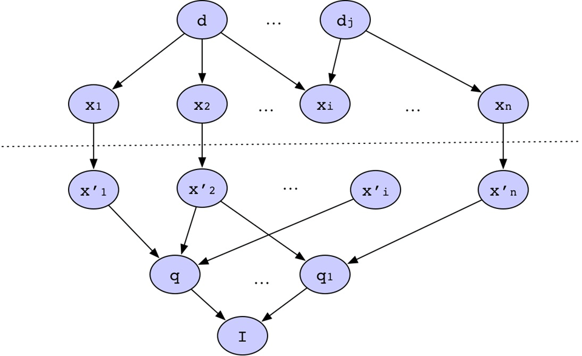
推理网模型结构：
网络中所有节点变量都是二值变量，其值域为{0,1}。
文档网络：
- 文档节点d对应文档集合D中的一个实际文档，其取值表示该文档是否被观察到。
- 表示节点x对应文档的索引项，其取值表示某一文档是否包含该索引项。
- 每个文档节点d与表示节点x用有向边连接，因为两者之间存在因果关系，因果关系的强度用表示节点的条件概率表来表示。
检索网络：
- 与文档的表示不同，检索网络以用户的检索需求是否被满足作为构成网络的因果关系，因此与文档网络的方向相反。
- 节点I表示用户的信息检索需求，该检索需求是否被满足。
- 节点qₗ代表各种不同的检索方案，其取值表示该检索是否被满足。
- 不同节点xᵢ′的组合用于表示检索方案的不同表示方案，每种表示方案通过一批不同的表示节点来表示，每个节点的取值表示该节点是否被观察到。
将文档网络与检索网络结合在一起的是两者的表示节点各自构成的空间。这两个空间可以根据实际的应用背景，建立起多种映射关系。本节推理网模型图中采用的是最简单的一一映射。
利用推理网模型，将信息检索过程转换为一个基于证据的推理过程：
- 指定一个文档变量的值为1，将它作为证据，计算检索节点的后验概率；
- 对所有文档做如上计算，然后根据后验概率值对文档与检索的相关度进行排序。
定义：
推理网模型中，一个文档与检索的相关度定义为给定证据d=1条件下，检索的q=1后验概率，即相关度排序函数为：
fr(q,d)=p(q=1∣d=1)
*简化推理网模型：将xᵢ和xᵢ′合并为节点xᵢ，所有表示节点用向量x=(x1,x2,...,xi)表示。
*对于简化推理网模型，可对相关度排序函数做如下推导：
f(q∣d)∝p(q,d)=∀x∑p(q,d,x)=∀x∑p(q∣d,x)p(d,x)
由于节点q与节点d被节点x=(x1,x2,...,xi)分割开，所以它们之间条件独立：
p(q∣d,x)=p(q,x)
当变量值确定时，各子节点xᵢ相互独立：
p(x∣d)=p(x1,x2,⋯,xn∣d)=i=1∑np(xi∣d)
在相关性排序函数中代入(1)(2)式子，整理得：
p(x∣d)=∀x∑p(q∣x)[i=1∏np(xi∣d)]p(d)
为p(d)、p(xi∣d)、p(q∣x)指定不同的取值方式，即可模拟多种经典信息检索模型，如布尔模型、向量空间模型。
思考：
如何取值，才能模拟布尔模型、向量空间模型？
推理网模型分别用文档网络和检索网络表示文档和检索，将多种检索方案和表示方案综合在一个统一的网络中。从理论上讲，它可以同时综合多种信息检索模型的优点。
信度网模型
相关概念
*样本空间(sample space)：文档集合D中所有文档的所有索引项构成的集合S={t1,t2,...,tn}，称为模型的样本空间。
*概念(concept)：集合S的一个子集定义为一个概念，用c表示：
c={t1,t2,...,tn}⊂S
概念即一个集合。
*为了方便处理和表示概念之间的关系，可以采用随机变量来表示这些概念：对S中的每一个索引项tᵢ分别设置值域为{0,1}的随机变量xᵢ，且用xᵢ=1表示该索引项包含在相应的概念中，则一个概念c就可以表示为集合c={x₁,x₂,…,xₙ}，且∀xᵢ=1。
*根据"概念"的定义：可以将每一个文档看作样本空间上的概念c，即d={x₁,x₂,…,xₙ}，同样，检索q也可看作样本空间S上的概念。
*概率分布P：对于样本空间S上的任意一个概念c，它的概率P©分布定义为概念c对样本空间S的覆盖度，并通过以下式计算：
P(c)=u∈U∑p(c∣u)p(u)
U表示样本空间S上的所有概念构成的集合。
*信度网模型将信息检索问题转化为了在样本空间S上的概念匹配问题。
定义：
文档d与检索q的相关度定义在样本空间S上，概念d对概念q的覆盖程度：
fr(q,d)=p(d=1∣q=1)
推导可得：
p(d∣q)=p(q)p(q,d)=ap(q,d)
其中，a是一个常数。
*引入基本概念u，可推导得：
p(q,d)=u∑(p(q,d)∣u)p(u)
由推导式可知，需利用变量之间的概率依赖关系。
*将这些关系表示为一个贝叶斯网络结构：
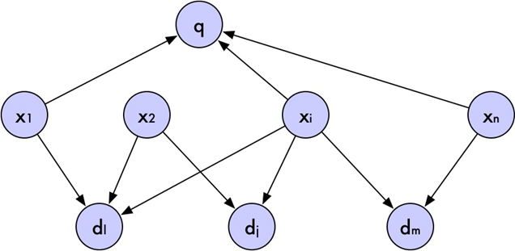
信度网模型结构：
结构中包含三类节点，每个节点变量的值域为{0,1}的二值变量。
- 索引项节点x₁,x₂,…,xₙ：节点由索引项对应的随机变量构成，变量值为1表示该索引项包含在当前的概念中。
- 文档节点d：每个文档对应一个文档节点，变量值为1表示概念d完全覆盖样本空间。
- 检索节点q：由于将文档和检索都看作统一样本空间上的概念，因此检索节点与文档节点的处理相同。
*将概念u表示为向量x，则公式可转换为：
p(q,d)=x∑(p(q,d∣x)p(x))
索引项节点给定后，文档节点与检索节点相互独立：
p(q,d)=x∑(p(d∣x)p(q∣x)p(x))
*与推理网模型类似，该公式中的参数在信度网中符合节点条件概率表的条件推理，通过为它们指定不同的函数，就可以模拟各种经典的信息检索模型。
结构化模型
本节讨论的结构化模型包含非重叠链表模型、邻近节点模型、扁平浏览模型、结构导向模型和超文本模型。
非重叠链表模型
Burkowski提出将文档的整个文本划分成若干个非重叠的文本区域，并用链表连接起来。由于将文本分为非重叠区域的方法有多种，所以会产生多种链表。如下图，采用了四个独立的链表来表示文档中的结构。
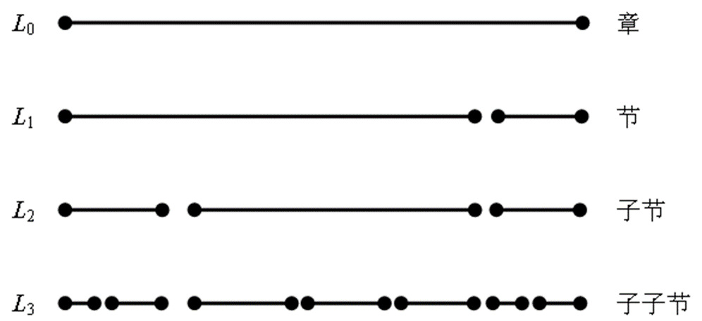
第一个链表是关于文档中所有章的链表，第二个链表是关于文档中所有节的链表，第三个链表包含文档中的所有子节。
非重叠链表模型特点：
- 各链表彼此独立，并且具有不同的数据结构。
- 同一链表中的文本区域没有重叠，不同链表中的文本区域可能重叠。
- 每个链表都对应一个独立的倒排文档，每个结构单元作为索引中的一项。与每个项相关的是一个文本区域的链表，表示文本区域在哪些文档中出现。
- 链表可与倒排文档合并，以表示文本中的单词。
由于文本区域是非重叠的，所以可以被提交的查询类型很简单：
- 选择一个包含给定单词的区域（不包含其他区域）；
- 选择一个不包含任何区域B的区域A（B属于一个不同于链表A的链表）；
- 选择一个不被包含于任何其他区域的区域。
邻近节点模型
Navarro和Baeza-Yates提出了邻近节点模型，该模型允许在相同文档的文本上定义独立分层（非扁平的）索引结构。每个索引都有严格的层次结构，即由章、节、段、页、行所组成，这些结构单元通常称之为结点，如下图所示。
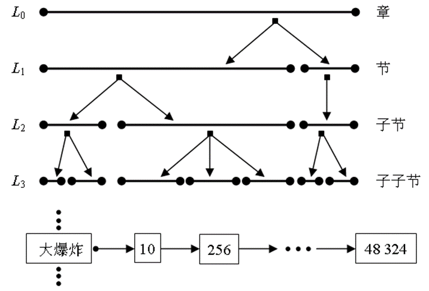
这是一个具有四个层次的层次索引结构，分别对应于同一篇文档中的章、节、子节、子子节。
词“大爆炸”的倒排列表中，列出了该词在文档中的位置，每个节点指明了结构化单元（如章、节）在文本中的位置。
邻近节点模型特点：
- 每个结点都与一个文本区域相关。
- 两个不同的层次结构可能会涉及到重叠的文本区域。
- 对于涉及不同层次结构的用户查询而言，所汇集的结果只能由来自其中一个层次结构的所有结点形成。
- 查询语言允许为字符串检索指定正则表达式，通过名称（如搜索章节）来引用结构成分，也可以是它们的组合。
- 从这种意义上来说，可以把这个模型看成是表达与高效之间的一种折中。查询语言的某些限制性表达，允许首先搜索出那些与查询中指定的字符串相匹配的单元，然后判定哪些单元满足查询的结构部分的要求，这样可以提高检索过程的效率。
扁平浏览模型
-
当用户的兴趣不在于提交查询，而是浏览文档中感兴趣的内容时，可以称为用户是在对文档空间进行浏览而不是检索。
-
扁平浏览模型的思想是假设用户浏览一个扁平组织结构的文档空间。
- 例如，文档集可以被描述为二维平面上的点或是一维链表中的元素。然后用户在这些文档上到处浏览，以查找相关信息。
- 例如，在相关反馈过程中，用户通过在相邻文档之间的浏览，查找出相关的资料，或找出一些感兴趣的关键词。这些关键词将被加入原始查询中，以提供更好的上下文，从而构造新的查询。
- 用户也可以以扁平的方式，浏览单个文档。例如，利用浏览器的窗口，用滚动条和光标浏览一个Web页面。
-
扁平浏览模型的一个缺陷是：在给定的页面和屏幕上，可能没有关于用户所处上下文情况的任何提示。
结构导向模型
- 为了对浏览的任务提供更好的支持，文档可以被组织成为像目录那样的结构。如有些Web搜索引擎（如Yahoo），除标准检索页面外，还提供了可以用于浏览和频繁查询的层次目录。
- 目录是类的层次结构，将文档按照相关主题来分类和组织。用户可以根据目录执行一个具有结构导向的浏览。例如，浏览一本电子书，第一个层次内容可能是章，第二个层次是所有节，第三个层次是所有段落，最后一个层次是文本本身（扁平）。
- 除了用于浏览任务导向的结构外，界面也可以提供一些其他的工具如历史地图，用来指明最近访问过的类，这对于浏览结构庞大的文档集是很有用的。
- 在检索时，通过表明事件发生来表示出这种结构（如采用内容表格的方法），这使我们能在全部文档上下文中看到事件的发生，而不是文本的某一页——以至于不清楚我们处在文档的哪个位置。
超文本模型
- 传统的与文本书写任务有关的概念是顺序，写作的顺序通常被认为是阅读的顺序，读者也不期待通过随机地阅读某段文本而全部理解作者的思想。人们需要以文本结构来跳过文本的部分章节，但这会造成读者与作者之间的交流障碍。因而，大多数书面文本采用顺序组织结构。当读者不能接受这样一个结构的规则时，他就通常不能把握作者寓意的主要思想。由此，定义了一种新的文本组织结构——超文本。
- 超文本：是一个允许以非顺序的方式在计算机屏幕上浏览文本的高层交互式导航结构。它由结点和链所组成，结点之间的关系用链表示，结点和链构成一个有向图结构。
- 对于超文本来说，每个结点都与一个文本区域相关，这个区域可能是书中的章，或文章中的节，或是一个Web页面。两个结点A、B被一条有向链接𝑳_𝑨𝑩相连接，说明与这两个结点相关联的文本具有某种联系。这样，读者在阅读结点A中的文本时，就可以跳转到相关联的结点B中的文本。
- 超文本的导航过程可以被理解为遍历一个有向图的过程。图中被链接的结点表示文本结点之间具有某种语义关联。当遍历这个图时，读者便可想象出由超文本设计者所构思出的信息流。
缺陷：
- 当超文本很大时，用户可能会失去超文本组织结构的路线，其结果，用户进行错误的导航决策，并偏离他的主目标（一般只是查找超文本上少量的信息），这种情况称之为用户在网络空间中的迷航。
- 当用户浏览一个超文本时，会局限于由超文本设计者所构建的信息流。
- 在超文本导航中，用户可能发现很难确定自己的方位，即使在前面讨论的导航工具如超文本地图存在的情况下，这种困难也依旧存在，原因可能是由于复杂的超文本组织具有太多允许用户前进和后退的链接。
超文本结构的定义应该是在域建模(domain modeling)阶段，即在需求分析阶段之后完成的。
超文本为形成万维网(World Wide Web)的HTML（超文本标记语言）和HTTP（超文本传输协议）的构想和设计奠定了基础。